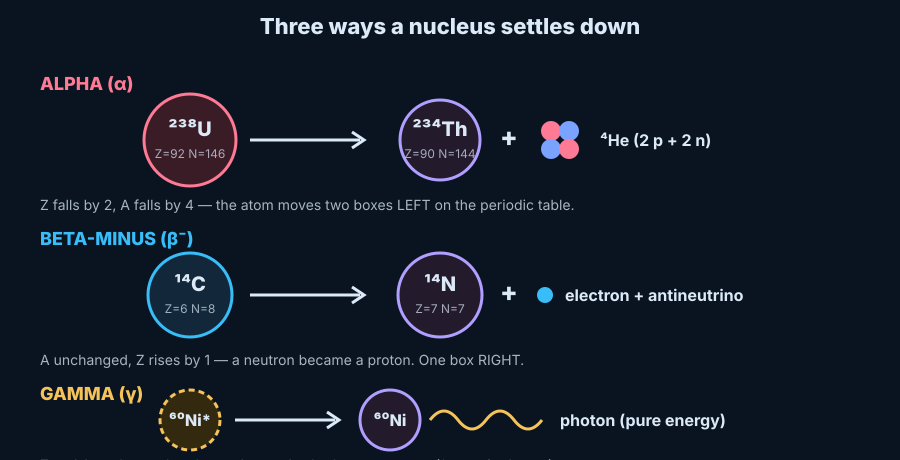
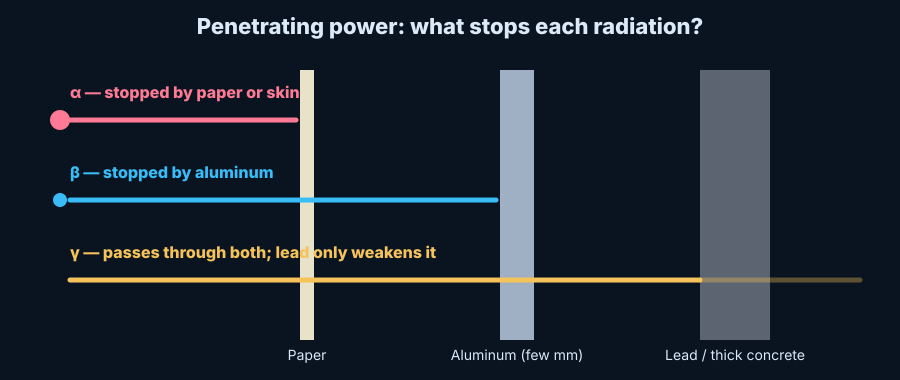

Chemistry · Nuclear Chemistry · Level 3–4
Radioactive Decay
The periodic table says an element is defined by its protons. Radioactive decay is the exception that proves how deep that rule goes: when a nucleus changes its proton count, it becomes a different element. Alpha, beta and gamma are the three ways an unstable nucleus gets to a calmer arrangement — and each one moves the atom to a different spot on the table, or none at all.
Prerequisite: Periodic Table of Elements (atomic number, isotopes) and Atoms: Structure, Motion & Matter. Historical story: Marie Curie.
1 · The problem
Why would a nucleus fall apart?
Inside a nucleus, protons repel each other with the electric force, while the strong nuclear force glues every proton and neutron to its close neighbors. Neutrons add glue without adding repulsion, so light elements are happiest with about as many neutrons as protons. Heavier nuclei need more neutrons than protons to stay together, because the repulsion reaches across the whole nucleus but the glue only reaches nearby.
Plot every nuclide with neutrons on one axis and protons on the other and the stable ones form a narrow band — the line of stability. Stray too far from it, or grow too big (beyond lead, Z = 82, nothing is fully stable), and the nucleus is unstable. It will change; when is a matter of chance, described by the half-life.
Same element, different isotope. Carbon-12 and carbon-14 both have 6 protons (so both are carbon on the periodic table) but C-14 has 8 neutrons, which puts it off the line of stability. That is why C-14 is radioactive and C-12 is not.
2 · The three radiations
Alpha, beta and gamma
Alpha (α)
The nucleus ejects a helium-4 nucleus: 2 protons and 2 neutrons. Common in heavy nuclei that are simply too big.
Z − 2, A − 4
Two boxes left on the table.
Beta (β⁻ / β⁺)
β⁻: a neutron turns into a proton and emits an electron (plus an antineutrino). Too many neutrons. β⁺: a proton turns into a neutron and emits a positron. Too many protons. This is the weak force at work.
β⁻: Z + 1, A sameβ⁺: Z − 1, A same
Gamma (γ)
A high-energy photon, released when a nucleus drops from an excited state (marked with *) to a lower one. It usually follows an alpha or beta decay.
Z same, A same
The atom does not move on the table.

Two bookkeeping rules make every decay equation checkable: the mass numbers (A) on both sides add up, and the atomic numbers (Z) add up (an electron counts as −1, a positron as +1).
3 · Simulation 1
Decay Lab: predict, then test
4 · Simulation 2
Half-life: chance in each atom, law in the crowd
No one can say when one particular atom will decay — each has the same chance every moment. But with millions of atoms, exactly half are gone after one half-life, half of the rest after the next, and so on. The decay is exponential: N = N₀ · (½)t / t½, the same curve built on Euler's number e.
Use it: radiocarbon dating
Living things keep swapping carbon with the air, so their carbon-14 fraction matches the atmosphere. At death the swapping stops and C-14 (half-life 5,730 years) decays by β⁻ into nitrogen-14. Measure how much is left and count the half-lives.
After about 10 half-lives (~57,000 years) less than 0.1% is left, which is why radiocarbon dating doesn't work on dinosaur bones — other isotope clocks with far longer half-lives, like uranium-238 (4.47 billion years), are used for those. See it applied in The Pleistocene Epoch.
5 · Simulation 3
A decay chain: uranium-238 walks down to lead
The daughter of a decay is often radioactive too, so the atom keeps stepping until it lands on a stable nuclide. Uranium-238 takes 14 steps to become lead-206. Notice how alpha steps go down-left and beta steps go up-left on the chart.
Radon-222 sits in the middle of that chain. It is the gas that seeps out of rock and basements — the reason radon testing exists. It is also why the periodic table lists radon as a noble gas with a health warning.
6 · Safety
Penetrating power and shielding

| Radiation | What it is | Stopped by | Main hazard |
|---|---|---|---|
| α | Helium-4 nucleus | Paper, skin | Inhaled or swallowed source (e.g. radon, polonium-210) |
| β | Electron / positron | A few mm of aluminum | Skin burns, internal exposure |
| γ | High-energy photon | Thick lead or concrete (reduces, never fully stops) | Whole-body exposure from outside |
The three protections: time (less exposure), distance (intensity falls with the square of distance), and shielding. Radiation is also useful — PET scans use β⁺ emitters, and the technetium-99m used in medical imaging is a pure gamma emitter with a 6-hour half-life, chosen because it disappears quickly.
7 · Check yourself
Quick checks
Radium-226 (Z = 88) emits an alpha particle. What are the daughter's Z and A?
Z = 86, A = 222 → radon-222. Alpha: Z − 2, A − 4.
Carbon-14 does β⁻ decay. What element results, and why does the mass number stay 14?
Nitrogen-14. A neutron turned into a proton (Z 6 → 7); the total number of nucleons is unchanged.
A sample has a half-life of 3 days. What fraction remains after 9 days?
9 days = 3 half-lives, so (½)³ = 1/8.
Does gamma decay change which element an atom is?
No. Z and A are unchanged, only the nucleus's energy drops.
Connections